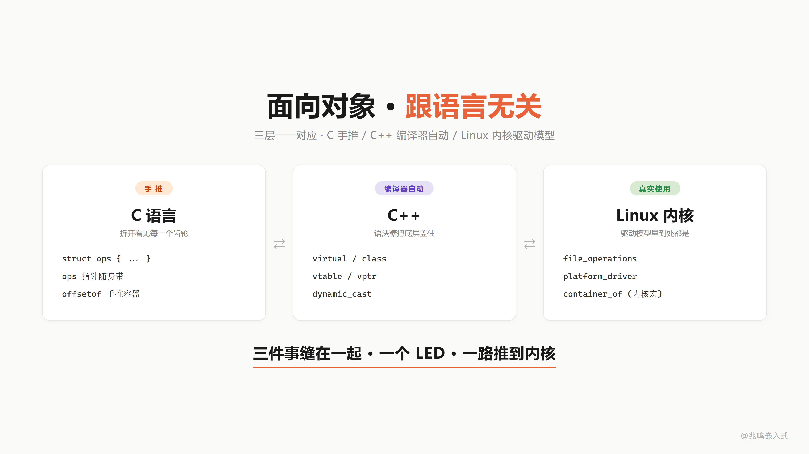
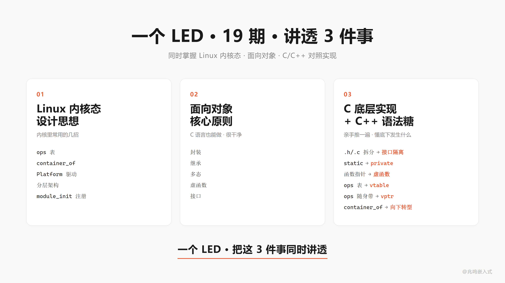
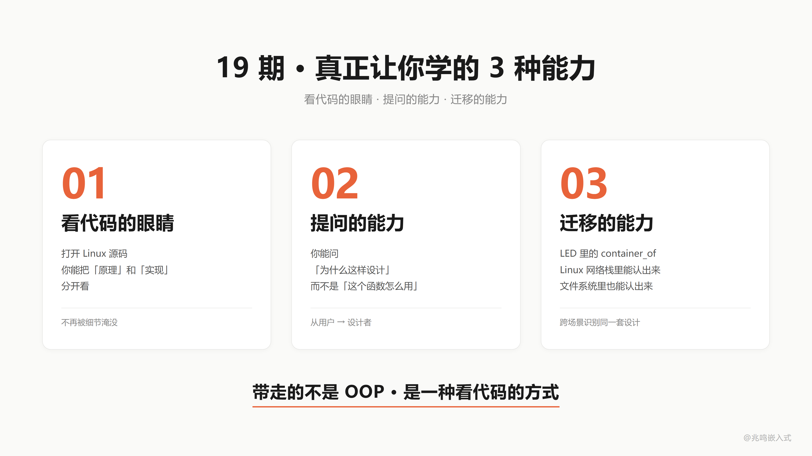
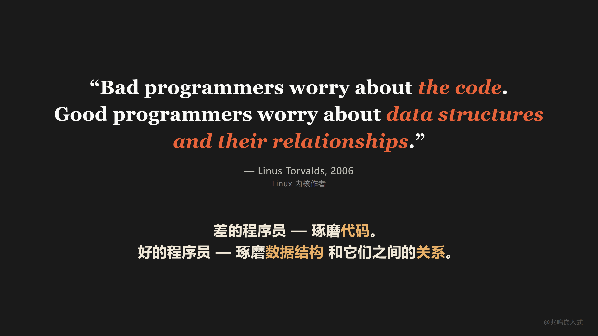
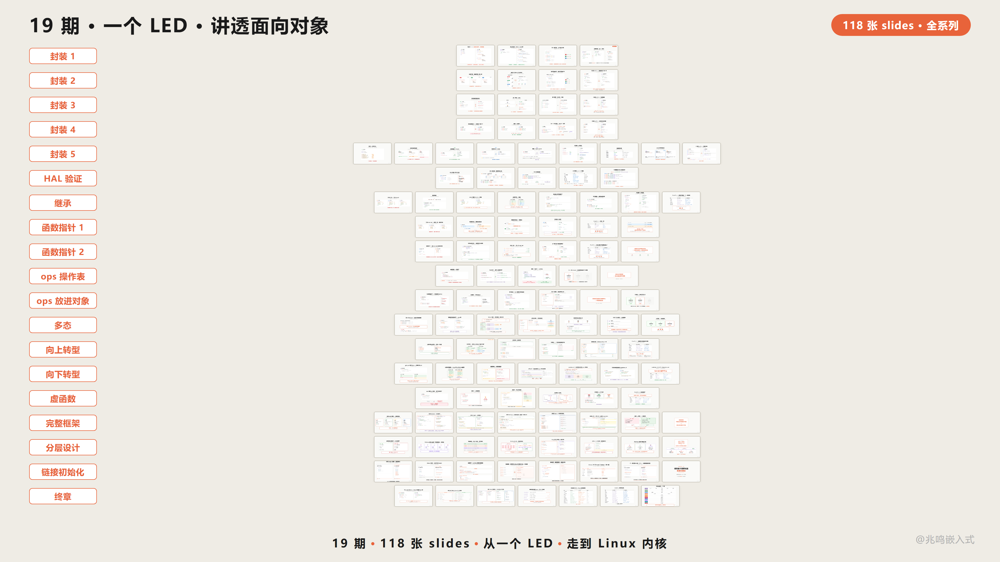

第 18 章 · 全书地图回顾 · 一颗 LED 走过的演化路径
配套代码：oop-in-c/code/18-roadmap/
ch01 到 ch17 走完了。这一章不引入任何新概念，只做一件事，把一颗 LED 走过的演化路径在书里串一遍。
18.1 三层缝在一起
市面上讲 C 语法的书不少，讲 C++ 面向对象的也很多，讲 Linux 内核的也有。单独都能找到。
但真正讲透 C 怎么实现 OOP 底层机制的，我看到的不多。把这套机制和 C++ 编译器自动帮你做的对应起来，更少。再和 Linux 内核驱动模型里的真实使用对应起来，我个人是真没找到合适的。
这本书想做的是把这三件事缝在一起：
C 怎么手写 OOP 底层
↓ 一一对应
C++ 编译器自动帮你做的
↓ 一一对应
Linux 内核里的真实使用
从一颗 LED 一路推到内核。

18.2 为什么是一颗 LED 讲 18 章
LED 简单，门槛低。但它足够完整，从一个寄存器，能一路走到 Linux 内核。
每一章你拿到的不是我自己想出来的东西，都是我在 Linux 内核、一线工业项目里长期看到的共通做法，用一颗 LED 串起来。
学完这本书你同时拿到 3 样东西：
第一·Linux 内核的设计思想。ops 表、container_of、Platform 驱动、分层架构、module_init 模块自注册，这些都是内核里反复使用的招。
第二·面向对象的核心原则。封装、继承、多态、向上转型、向下转型、虚函数 / 纯虚 / 接口，C 语言也能做，而且做得很干净。
第三·C 底层实现 + C++ 语法糖对应。每一章末尾都给了对应的 C++ 写法。头文件拆分对应接口隔离。static 对应 private。函数指针对应虚函数。ops 表对应 vtable。ops 指针随身带对应 vptr。container_of 对应 dynamic_cast。
C 里亲手推一遍的，C++ 一个语法糖自动帮你做。一颗 LED，C 和 C++ 同时掌握。

18.3 演化路径全景
回头看走过的路。
第一阶段：封装篇（ch01 - ch05）
ch01 三份函数 → struct + me 指针 封装的最朴素形态
ch02 struct 字段从 .h 移到 .c 信息隐藏 / static
ch03 led_init / led_deinit 命名前缀 手搓 class
ch04 数据三级分类（auto/static/heap） 数据归位
ch05 HAL 库源码漫游 验证课，看真实 HAL 是同一招
到 ch05，你已经知道：你写过 int sum(int *arr, int len)，你就在做封装。封装不是高级特性，是你已经在做的事。
第二阶段：继承篇（ch06）
ch06 共性提取 → struct led_base { name, is_on }
struct led_gpio { struct led_base base; uint8_t pin; ... };
把所有 LED 共有的“状态层“字段（name、is_on）抽到一个共同基类，硬件字段（pin 等）下沉到子类。继承在 C 里就是 “把基类当字段嵌进子类”。
第三阶段：多态篇（ch07 - ch11）
ch07 函数指针入门：变量存函数地址
ch08 函数指针传参：注册 / 拆解 callback
ch09 ops 表：struct led_ops { on / off / toggle }
ch10 ops 放进对象：const struct led_ops *ops 字段
ch11 多态完整：led->ops->on(led) runtime dispatch
到 ch11 末尾，struct led_base 长这样：
struct led_base {
const struct led_ops *ops; /* 虚函数表指针 */
const char *name;
bool is_on;
};
第四阶段：工程威力篇（ch12 - ch17）
ch12 向上转型：struct led_base * 句柄，应用层零硬件字样
ch13 向下转型：container_of 反推子类，编译期算偏移
ch14 必填 / 选填 / 接口：纯虚、虚、interface 的 C 实现
ch15 Platform 抽象：3 个 platform_ops 实例运行时切换
ch16 Linux 内核映射：file_operations / gpio_chip / i2c_algorithm 同源
ch17 链接自动初始化：MODULE_INIT 一行，main 不动
第五阶段：终章（本章）
ch18 不引入新概念。把走过的路在书里 replay 一遍。
18.4 演化路径 replay：一颗 LED 的简史
配套代码 oop-in-c/code/18-roadmap/pc/main.c 把这条路在屏幕上 replay 一遍。
Stage 1：三份独立函数
static void s1_red_on(void) { write_reg(13, 1); }
static void s1_green_on(void) { write_reg(14, 1); }
static void s1_blue_on(void) { write_reg(15, 1); }
3 个 LED，3 份代码。每个函数体 1 行，但有 3 份。加 5 个 LED？复制 5 遍。痛点的起点。
Stage 2：struct + me 指针
struct s2_led {
uint8_t pin;
bool is_on;
};
static void s2_led_on(struct s2_led *me)
{
me->is_on = true;
write_reg(me->pin, 1);
}
3 个 LED 共用一份 s2_led_on，传不同的 me 指针。封装最朴素的形态。
Stage 3：继承 + ops 表 + 多态
struct s3_led_ops {
void (*on)(struct s3_led_base *me);
};
struct s3_led_base {
const struct s3_led_ops *ops;
const char *name;
};
struct s3_led_gpio {
struct s3_led_base base;
uint8_t pin;
};
struct s3_led_pwm {
struct s3_led_base base;
uint8_t channel;
uint8_t duty;
};
/* 父类统一接口：一行 dispatch */
static void s3_led_on(struct s3_led_base *me)
{
me->ops->on(me); /* 多态 dispatch */
}
/* 两种子类各自的 on 实现 */
static void s3_gpio_on(struct s3_led_base *me)
{
struct s3_led_gpio *self = (struct s3_led_gpio *)me;
printf(" s3_gpio_on [%s]: write reg(%u) = 1\n",
me->name, (unsigned)self->pin);
}
static void s3_pwm_on(struct s3_led_base *me)
{
struct s3_led_pwm *self = (struct s3_led_pwm *)me;
printf(" s3_pwm_on [%s]: PWM ch=%u duty=%u%%\n",
me->name, (unsigned)self->channel, (unsigned)self->duty);
}
/* 两份 ops 表，一份服务 GPIO 子类，一份服务 PWM 子类 */
static const struct s3_led_ops gpio_ops = { .on = s3_gpio_on };
static const struct s3_led_ops pwm_ops = { .on = s3_pwm_on };
GPIO 灯和 PWM 灯共享 s3_led_on 接口，背后走不同的实现。多态通过 ops 表实现。
Stage 4：向上转型 + 全局句柄
static struct s3_led_gpio g_gpio;
static struct s3_led_pwm g_pwm;
static struct s3_led_base *g_led_red;
static struct s3_led_base *g_led_status;
static void board_init(void)
{
/* 子类对象构造：填 ops 字段 + 自己的硬件参数 */
g_gpio.base.ops = &gpio_ops;
g_gpio.base.name = "RED";
g_gpio.pin = 13;
g_pwm.base.ops = &pwm_ops;
g_pwm.base.name = "STAT";
g_pwm.channel = 1;
g_pwm.duty = 100;
g_led_red = &g_gpio.base; /* 向上转型 */
g_led_status = &g_pwm.base;
}
/* 应用层调用 */
s3_led_on(g_led_red); /* 走 s3_gpio_on */
s3_led_on(g_led_status); /* 走 s3_pwm_on */
应用层只见 struct s3_led_base * 句柄，调同一个 s3_led_on(handle)。换硬件改 board_init 里那几行字段赋值，应用 0 修改。
Stage 5：链接自动注册
/* drv_led.c */
static int led_init(void)
{
printf(" [led] led_init: register LED driver\n");
return 0;
}
MODULE_INIT(led_init); /* 一行宏代替 main 里的手写调用 */
/* MODULE_INIT 宏的实现（来自 ch17）：
* 把 fn 的地址塞进 .my_initcall 段，链接器自动收集。
*/
#define MODULE_INIT(fn) \
static initcall_t __initcall_##fn \
__attribute__((used, section("my_initcall"))) = fn
/* 启动代码遍历该段 */
extern initcall_t __start_my_initcall[];
extern initcall_t __stop_my_initcall[];
void do_initcalls(void)
{
for (initcall_t *fn = __start_my_initcall;
fn < __stop_my_initcall; fn++)
(*fn)();
}
/* main.c 里 */
int main(void)
{
do_initcalls(); /* 不知道有哪些 init，但都会被调到 */
while (1) { /* 业务循环 */ }
}
main 函数 0 引用 led_init。链接器收集所有 MODULE_INIT 段，启动期遍历。加新驱动写一行宏，main 不动。这就是 ch17 的完整 demo。
跑 oop-in-c/code/18-roadmap/pc/demo：
[stage 1] ch01 - 3 LEDs, 3 copies
s1_red_on: write reg(13) = 1
s1_green_on: write reg(14) = 1
s1_blue_on: write reg(15) = 1
[stage 2] ch01 - struct + me pointer
s2_led_on(pin=13): write reg = 1
s2_led_on(pin=14): write reg = 1
s2_led_on(pin=15): write reg = 1
[stage 3] ch06-ch11 - inheritance + ops + polymorphism
s3_gpio_on [RED]: write reg(13) = 1
s3_pwm_on [STAT]: PWM ch=1 duty=100%
[stage 4] ch12-ch15 - upcasting + handle + board_init
s3_gpio_on [RED]: write reg(13) = 1
s3_pwm_on [STAT]: PWM ch=1 duty=100%
[stage 5] ch17 - linker auto registration
main never references *_init, drivers register themselves
一颗 LED，5 个阶段，5 行代码风格的演化。一路走到 Linux 内核风格的全套架构。
18.5 全系列概念到 Linux 内核的映射
把每一章学到的招，映射到 Linux 内核里的对应物：
| 你学过的 | Linux 内核里 |
|---|---|
struct led_base | struct device / struct file |
me 指针 | dev / file / i2c_client / spi_device 等指针参数 |
| static 信息隐藏 | 内核函数大量 static，跨文件用 EXPORT_SYMBOL |
命名前缀 led_ | 内核子系统前缀 gpio_ / i2c_ / dev_ |
| init / deinit | probe / remove |
struct led_base 嵌入子类 | struct gpio_chip 嵌入 driver-private 结构 |
struct led_ops | struct file_operations / struct gpio_chip 字段 |
me->ops->on(me) | f_op->read(file, ...) / gc->set(gc, offset, value) |
| container_of | container_of（同名同源） |
| 必填 + 选填 + 接口 | file_operations 混合策略，read/write 必填，ioctl 选填 |
| 全局句柄 | extern struct device *some_device; |
board_init | arch_init_call / device tree |
| Platform 抽象 | struct platform_driver / platform_device |
MODULE_INIT(fn) | module_init(fn) / device_initcall(fn) |
| 链接器自动收集 | __attribute__((__section__(".initcall6.init"))) |
do_initcalls() | do_initcalls()（同名） |
每一行你学过的东西，内核里都有对应。分层一模一样，每一项一模一样。
18.6 C 对比 C++ 的全套对照
每一章末尾给了 C 对比 C++ 的局部对照。这里把全套放一起：
| C（你亲手写） | C++（编译器替你做） |
|---|---|
struct led { ... } + int led_on(struct led *me) | class Led { void on(); } |
me 指针 | this 指针 |
| 头文件拆 .h / .c | private / public 关键字 |
struct led_base 嵌入子类 | class Led : public LedBase {} 继承 |
struct led_ops | vtable |
const struct led_ops *ops 字段 | vptr |
me->ops->on(me) | me->on() |
&gpio_led.base | 隐式 LedBase * 转换 |
container_of | dynamic_cast |
| 统一接口里 assert NULL | 纯虚函数 virtual void on() = 0 |
| 统一接口里走默认 | 虚函数有默认实现 |
| 全 ops 必填 | 全纯虚抽象类（接口） |
MODULE_INIT(fn) | 全局对象构造函数 |
__section__("my_initcall") | .init_array 段 |
do_initcalls() | crt0 启动代码 |
每一对，C++ 编译器自动做的，你亲手推了一遍。
你不再是背面向对象的名词。你知道底下发生了什么。
18.7 4000 万行的骨架
Linux 内核 4000 万行代码，骨架就是这几招：
- struct 装数据（
struct led/struct file/struct device） - 函数指针装行为（ops 表）（
struct led_ops/struct file_operations/struct gpio_chip） - 嵌入式继承（子类把父类放在第一个或任意字段，C 没有
extends关键字，靠字段嵌入） - container_of 反推（成员地址 - offsetof = 外层 struct 起点）
- 多态 dispatch（
me->ops->op(me)，一行 dispatch 到具体子类实现） - 必填 + 选填 + 接口策略（assert NULL / 父类提供默认 / 全 op 必填的接口）
- 板级初始化分离硬件配置（component_cfg + board_init.c，硬件描述独立成目录，往设备树演化）
- Platform 抽象隔离芯片变化（一份 driver + N 份 platform 适配 = N+M 不再 N×M）
- 链接自动初始化（
__attribute__((section()))+ 链接器收集 + 启动期遍历，加新驱动 main 一字不动）
剩下的 3999 万行？是各种设备、各种协议、各种场景，但骨架，就是你学的这九招。
19 期前你打开内核源码，看到的是天书。
今天你打开同一段代码，你看到的是 struct，是 ops 表，是 container_of。
你能读了。
不是代码变简单了，是你变强了。
不是因为你聪明，是因为它就用了这几招。
18.8 OOP 三种能力
学完这本书你带走的不只是 OOP 的几个名词，是 3 种能力：
第一·看代码的眼睛。打开 Linux 源码，能把“原理“和“实现“分开看。
第二·提问的能力。你能问“这里为什么这样设计“，而不是只能问“这个函数怎么用“。
第三·迁移的能力。LED 里的 container_of，你在 Linux 网络栈里能认出来，在文件系统里能认出来，在驱动子系统里也能认出来。
这一本书之后，你带走的不只是 OOP 的几个概念，是一种看代码的方式。

18.9 工程师版图：你停在哪一层
第一层 · 普通工程师 写功能、调 bug、配寄存器
第二层 · 高级工程师 写架构、识别屎山、主导设计
第三层 · 技术领导 定方向、给规范、影响团队
这本书能帮你从第一层往第二层走。这一步跨起来挺难的，但走完这本书，你会有路径感。
18.10 为什么不直接讲 C++
你可能问，为什么花这么多篇幅用 C 推 OOP，不直接讲 C++ 一了百了？
C++ 我项目里也在用，应用层很顺手。但用 C 讲 OOP，有它自己的理由。
直接上 C++、Java、Python，你能用，但你看不见底层。虚函数怎么实现的、多态怎么调度，这些在 C++ 里都被语法糖盖住了。用 C 手推一遍，你能拆开看见每一个齿轮，回头再用 C++，那些“魔法“你心里都有数。
更关键的一点，嵌入式里几个绕不开的大块头：Linux 内核、Zephyr、RT-Thread，全是 C 写的。你不懂 C 怎么做 OOP，打开源码看到 ops 表、看到 container_of，只能照抄，不知道为什么这么设计。
而嵌入式工程师有一个天然的优势，汇编、计算机原理、编译器和链接器、操作系统底层，这些上层语言出身的工程师摸不到的东西，你都能从底往上串成一条线。
这本书是从底往上推。等你看明白底层，C++ 那些机制只是把你手推的东西换了语法糖。
18.11 AI 时代
AI 时代了，写代码这件事确实越来越快。
但能不能给 AI 一个好骨架，让它一直能写下去，这是工程师的事。
AI 帮你写代码，参考的就是你项目里已有的代码，你写得清楚，AI 才能写得清楚；你给一坨屎山，它就接着生一坨屎山。
这就是 AI 时代你的核心竞争力，你的架构能力，决定了 AI 能帮你放大多少。
18.12 一句金句
19 章讲了一件事，但有一句话比我讲得更好。是 Linus Torvalds 说的，Linux 内核的作者：
Bad programmers worry about the code. Good programmers worry about data structures and their relationships.
差的程序员琢磨代码。好的程序员琢磨数据结构，和它们之间的关系。
Linus Torvalds, Git mailing list, 2006
整本书 17 章一直在写 struct，也一直在画 struct 之间的关系。
把这句话截图保存吧。

18.13 18 期合集封面墙
视频版的合集走过 18 期，每一期对应这本书的一个章节（ch01-ch17 + 终章）。

18.14 完整源码清单
把下面的代码块分别保存到对应的文件，目录结构和 oop-in-c/code/18-roadmap/pc/ 一致。make && ./demo 即可跑通。
本章配套代码不引入新机制，只把 ch01 → ch17 一颗 LED 走过的演化路径在屏幕上 replay 一遍。一份 main.c 包揽全部 5 个阶段的代码（每段对应书里的一个章节，前面 18.4 节里贴的就是它的片段）。
文件 1：main.c（164 行）
5 个阶段：复制粘贴 → struct + me 指针 → 继承 + ops 表 + 多态 → 向上转型 + 全局句柄 → 链接自动注册（说明性占位，真实机制见 ch17）。
/* SPDX-License-Identifier: MIT */
/*
* main.c - 一颗 LED 演化路径全景
*
* 这个文件不教新东西。它把 ch01 → ch17 一颗 LED 走过的演化路径
* 在屏幕上 replay 一遍，让读者看见自己走过的路。
*
* 每一段对应书里的一个章节。每一段都能跑（虽然有些段刻意保留了
* "原始痛点"，比如 stage 1 的三份独立函数）。
*/
#include <stdint.h>
#include <stdbool.h>
#include <stdio.h>
/* ======================== Stage 1: ch01 ========================
* 三个 LED 三份代码 - 复制粘贴
*/
static void s1_red_on(void)
{
printf(" s1_red_on: write reg(13) = 1\n");
}
static void s1_green_on(void)
{
printf(" s1_green_on: write reg(14) = 1\n");
}
static void s1_blue_on(void)
{
printf(" s1_blue_on: write reg(15) = 1\n");
}
/* ======================== Stage 2: ch01 ========================
* 一份函数 + me 指针。封装的最朴素形态。
*/
struct s2_led {
uint8_t pin;
bool is_on;
};
static void s2_led_on(struct s2_led *me)
{
me->is_on = true;
printf(" s2_led_on(pin=%u): write reg = 1\n", (unsigned)me->pin);
}
/* ======================== Stage 3: ch06 - ch11 ========================
* 继承 + ops 表 + 多态 dispatch
*/
struct s3_led_base;
struct s3_led_ops {
void (*on)(struct s3_led_base *me);
};
struct s3_led_base {
const struct s3_led_ops *ops;
const char *name;
};
struct s3_led_gpio {
struct s3_led_base base;
uint8_t pin;
};
struct s3_led_pwm {
struct s3_led_base base;
uint8_t channel;
};
static void s3_gpio_on(struct s3_led_base *me)
{
struct s3_led_gpio *self = (struct s3_led_gpio *)me;
printf(" s3_gpio_on [%s]: write reg(%u) = 1\n",
me->name, (unsigned)self->pin);
}
static void s3_pwm_on(struct s3_led_base *me)
{
struct s3_led_pwm *self = (struct s3_led_pwm *)me;
printf(" s3_pwm_on [%s]: PWM ch=%u duty=100%%\n",
me->name, (unsigned)self->channel);
}
static void s3_led_on(struct s3_led_base *me)
{
me->ops->on(me); /* 多态 dispatch */
}
/* ======================== Stage 4: ch12 - ch15 ========================
* 向上转型 + 全局句柄 + 板级初始化
*/
static struct s3_led_gpio g_gpio;
static struct s3_led_pwm g_pwm;
static struct s3_led_base *g_led_red;
static struct s3_led_base *g_led_status;
static const struct s3_led_ops gpio_ops = { .on = s3_gpio_on };
static const struct s3_led_ops pwm_ops = { .on = s3_pwm_on };
static void s4_board_init(void)
{
g_gpio.base.ops = &gpio_ops;
g_gpio.base.name = "RED";
g_gpio.pin = 13;
g_pwm.base.ops = &pwm_ops;
g_pwm.base.name = "STAT";
g_pwm.channel = 1;
g_led_red = &g_gpio.base; /* 向上转型 */
g_led_status = &g_pwm.base;
}
/* ======================== Replay ======================== */
int main(void)
{
printf("=========================================\n");
printf(" ch18 - the road one LED has walked\n");
printf("=========================================\n");
printf("\n[stage 1] ch01 - 3 LEDs, 3 copies\n");
s1_red_on();
s1_green_on();
s1_blue_on();
printf("\n[stage 2] ch01 - struct + me pointer\n");
struct s2_led red = { .pin = 13, .is_on = false };
struct s2_led green = { .pin = 14, .is_on = false };
struct s2_led blue = { .pin = 15, .is_on = false };
s2_led_on(&red);
s2_led_on(&green);
s2_led_on(&blue);
printf("\n[stage 3] ch06-ch11 - inheritance + ops + polymorphism\n");
struct s3_led_gpio g = { .base = {.ops = &gpio_ops, .name = "RED"}, .pin = 13 };
struct s3_led_pwm p = { .base = {.ops = &pwm_ops, .name = "STAT"}, .channel = 1 };
s3_led_on(&g.base);
s3_led_on(&p.base);
printf("\n[stage 4] ch12-ch15 - upcasting + handle + board_init\n");
s4_board_init();
s3_led_on(g_led_red);
s3_led_on(g_led_status);
printf("\n[stage 5] ch17 - linker auto registration (see 17-initcall)\n");
printf(" main never references *_init, drivers register themselves\n");
printf("\n=========================================\n");
printf(" one LED, 17 chapters, 4000 lines covered\n");
printf("=========================================\n");
printf("\nPress Enter to exit...\n");
getchar();
return 0;
}
文件 2：Makefile（19 行）
# Makefile - ch18 roadmap recap (PC)
CC = gcc
CFLAGS = -Wall -Wextra -std=c99
TARGET = demo
SRCS = main.c
.PHONY: all clean run
all: $(TARGET)
$(TARGET): $(SRCS)
$(CC) $(CFLAGS) -o $(TARGET) $(SRCS)
run: $(TARGET)
./$(TARGET)
clean:
rm -f $(TARGET) $(TARGET).exe
跑一遍
cd oop-in-c/code/18-roadmap/pc
make
./demo
期望输出
=========================================
ch18 - the road one LED has walked
=========================================
[stage 1] ch01 - 3 LEDs, 3 copies
s1_red_on: write reg(13) = 1
s1_green_on: write reg(14) = 1
s1_blue_on: write reg(15) = 1
[stage 2] ch01 - struct + me pointer
s2_led_on(pin=13): write reg = 1
s2_led_on(pin=14): write reg = 1
s2_led_on(pin=15): write reg = 1
[stage 3] ch06-ch11 - inheritance + ops + polymorphism
s3_gpio_on [RED]: write reg(13) = 1
s3_pwm_on [STAT]: PWM ch=1 duty=100%
[stage 4] ch12-ch15 - upcasting + handle + board_init
s3_gpio_on [RED]: write reg(13) = 1
s3_pwm_on [STAT]: PWM ch=1 duty=100%
[stage 5] ch17 - linker auto registration (see 17-initcall)
main never references *_init, drivers register themselves
=========================================
one LED, 17 chapters, 4000 lines covered
=========================================
一颗 LED，5 个阶段，5 行代码风格的演化。看自己一路走过的路。
18.15 不止于这 18 章 OOP 主体（外加工业实战 2 章）
封装、继承、多态，这本书 18 章 OOP 主体是面向对象的基本功。
工业级嵌入式架构还有几座山：分层架构、层次化状态机、事件驱动 + 发布订阅、非阻塞驱动框架。
这些不是 PPT 上的名词。是真正能让 11 万行业务代码保持清醒的工具。
这本书是这套思想的入门。后面的山一座一座去做，做好了在 GitHub Issues 或 Gitee Issues 第一时间告诉你。
18.16 视频回放
写在最后
走完这本书，你再看任何 C 代码，眼里都是设计。
不管你刚入行，还是已经做了 5 年、10 年，能走到这里，你已经在路上了。